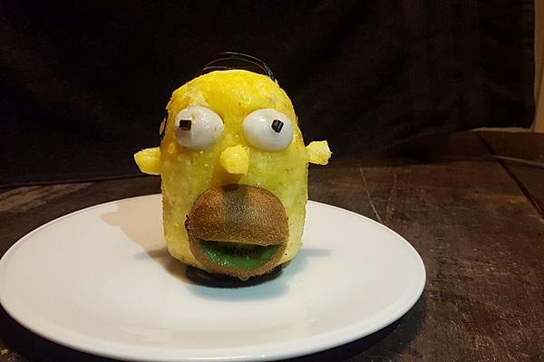

Homer Simpson Pineapple Head
Home > Homer Simpon Pineapple Head Recipe

Description:
Fruit salad in its most appealing form.
Ingredients:
- 1 Pineapple
- 1/2 Kiwi
- 2 lychees
- 2 black licorice wheels
- 6 toothpicks
Steps:
- Peel the pineapple and cut it in an oval head form
- Cut a small nose and ears from the pineapple leftovers
- The kiwi is cut in half lengthwise in a concave shape. Remove a slice from the concave half of the kiwi to create a mouth with the familiar expressionless face. The mouth of the kiwi is attached to the lower part of the pineapple with a toothpick.
- Above the mouth, the eye sockets are excavated with the help of a teaspoon or ice cream scoop. The lychees are picked and fixed in the eye sockets with toothpicks.
- Now the nose and ears are also attached in the appropriate position with toothpicks.
- The main hair and the crown of hair are made from the unrolled, divided licorice wheels and shaped with the help of several holes or cuts. The pupils are also parts of the licorice wheels.